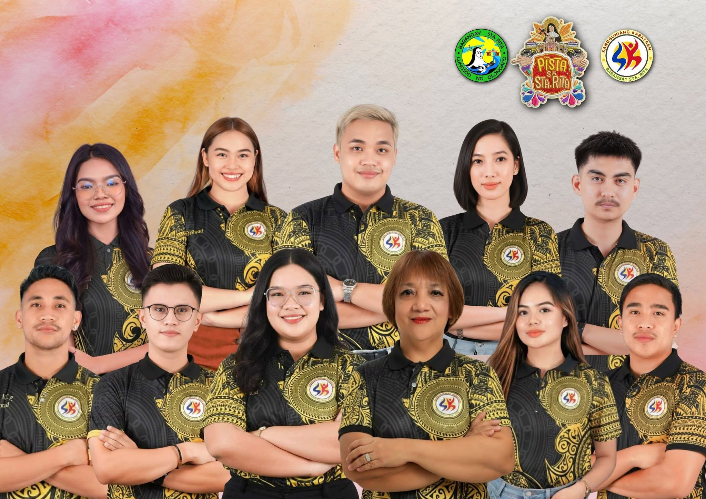

Accessible Information
Announcements, events, and opportunities are all in one place, not buried in social media posts.
Get the latest SK announcements, find youth programs and opportunities, and see completed projects and where SK funds go. No more digging through Facebook posts.
A web platform for the Sangguniang Kabataan of Barangay Sta. Rita, Olongapo City, so announcements, opportunities, and completed projects are easy to find and open to everyone.
Announcements, events, and opportunities are all in one place, not buried in social media posts.
Browse finished SK projects with descriptions, photos, completion dates, and accomplishment reports.
See budget allocations and expense breakdowns so everyone knows where SK funds go.
Meet the officials of Barangay Sta. Rita, Olongapo City, who plan and carry out programs and projects for the youth. They work to keep the community informed and accountable.
